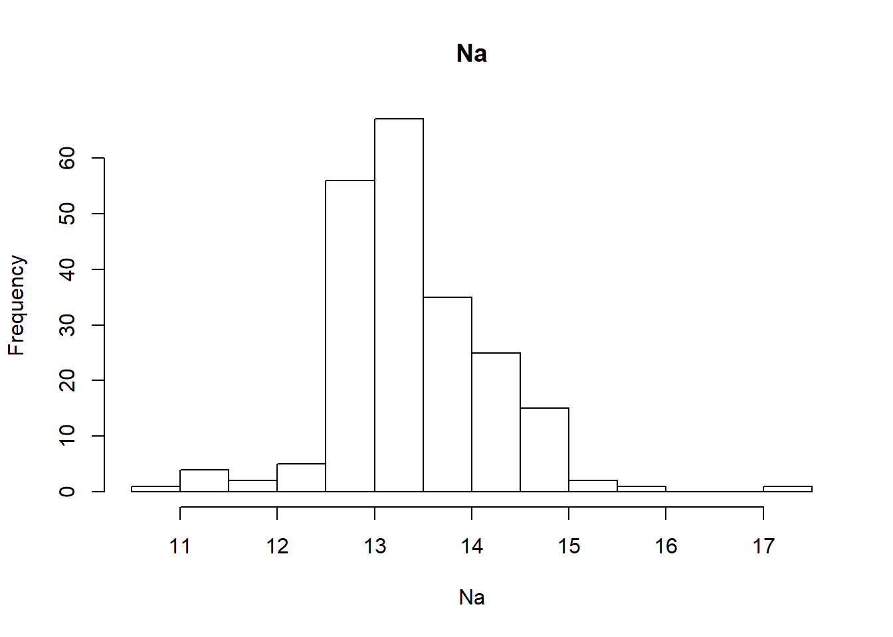
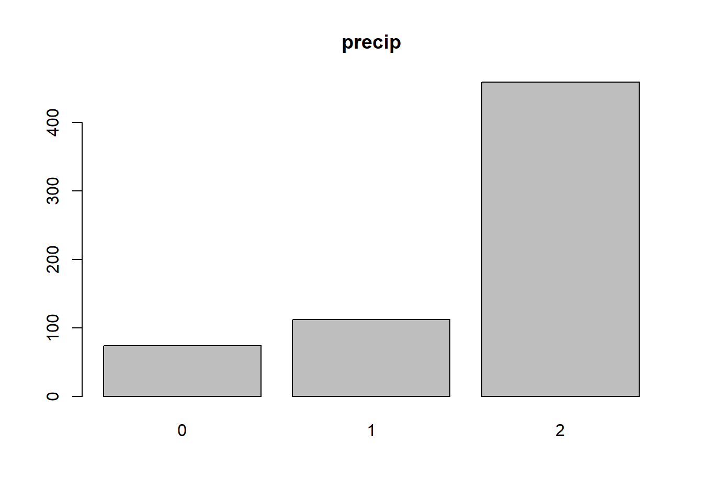

Chapter 4 HW3
4.1 3.1


4.1.1 3.1a

Answer: I use histograms to understand the distribution of each predictor variable. The variables differ quite a bit. Some are more normally distributed (e.g., Na, Al) while others do not look normal at all (e.g., Ba, Fe, K).
#predictor distributions. examples.
for(i in c(2, 6, 9)){
hist(Glass[,i], main = names(Glass)[i], xlab = names(Glass)[i], breaks = 20)
}

I use a correlation plot to help me understand the correlations between predictors. There are some strong positive relationships (i.e., Rl and Ca, Al and Ba) as well as some strong negative relationships (i.e., Rl and Si, Rl and Al, Mg and Ba). Most relationships are not very strong.
#relationships between predictors
loadPkg("corrplot")
correlations <- cor(Glass[,1:9])
corrplot(correlations)
4.1.2 3.1b

Answer: Yes, there do appear to be outliers. “K” has a very obvious outlier with a value of 6. “Ba” also has outliers at above 2.0,and “Fe” has an outlier above 0.5. Skew is also present in many predictors. While some have only minor skew (e.g., Rl, Al), others are much more pronounced and obvious (e.g., Mg, Ba, Fe)
4.1.3 3.1c

Answer: Yes, a log or Box Cox transformation could help remove the skew mentioned above. Depending on what kind of classification model we are using, centering and scaling could be important for all variables. For example, a logistic regression classification type model will be much more sensitive to variables on different scales than a decision tree. Removing the outliers may still be required after addressing skew, so that may be needed as well to improve model performance. Thankfully, there are no missing values in any columns, so we do not need to address those by imputation, removal, or other means.
4.2 3.2


loadPkg("mlbench")
data(Soybean)4.2.1 3.2a

Answer: The frequency distributions for the categorical predictors are degenerate. Most consist of two or three values, so the distributions are not normal. This is not surprising as the values are categorical, not continuous. Often the values in the variables are not evenly distributed by frequency, with one or more values having a much greater frequency than others (e.g., leaf.marg has many 0 and 2 but few 1).
#frequency distributions. examples
for(i in c(4,13,15)){
plot(Soybean[,i], main = names(Soybean)[i])
}

There are lots of missing values in the data set as a whole, and nearly every variable has missing values.
#summary. show missing value counts
summary(Soybean[,2:36])## date plant.stand precip temp hail crop.hist
## 5 :149 0 :354 0 : 74 0 : 80 0 :435 0 : 65
## 4 :131 1 :293 1 :112 1 :374 1 :127 1 :165
## 3 :118 NA's: 36 2 :459 2 :199 NA's:121 2 :219
## 2 : 93 NA's: 38 NA's: 30 3 :218
## 6 : 90 NA's: 16
## (Other):101
## NA's : 1
## area.dam sever seed.tmt germ plant.growth leaves
## 0 :123 0 :195 0 :305 0 :165 0 :441 0: 77
## 1 :227 1 :322 1 :222 1 :213 1 :226 1:606
## 2 :145 2 : 45 2 : 35 2 :193 NA's: 16
## 3 :187 NA's:121 NA's:121 NA's:112
## NA's: 1
##
##
## leaf.halo leaf.marg leaf.size leaf.shread leaf.malf leaf.mild
## 0 :221 0 :357 0 : 51 0 :487 0 :554 0 :535
## 1 : 36 1 : 21 1 :327 1 : 96 1 : 45 1 : 20
## 2 :342 2 :221 2 :221 NA's:100 NA's: 84 2 : 20
## NA's: 84 NA's: 84 NA's: 84 NA's:108
##
##
##
## stem lodging stem.cankers canker.lesion fruiting.bodies
## 0 :296 0 :520 0 :379 0 :320 0 :473
## 1 :371 1 : 42 1 : 39 1 : 83 1 :104
## NA's: 16 NA's:121 2 : 36 2 :177 NA's:106
## 3 :191 3 : 65
## NA's: 38 NA's: 38
##
##
## ext.decay mycelium int.discolor sclerotia fruit.pods fruit.spots
## 0 :497 0 :639 0 :581 0 :625 0 :407 0 :345
## 1 :135 1 : 6 1 : 44 1 : 20 1 :130 1 : 75
## 2 : 13 NA's: 38 2 : 20 NA's: 38 2 : 14 2 : 57
## NA's: 38 NA's: 38 3 : 48 4 :100
## NA's: 84 NA's:106
##
##
## seed mold.growth seed.discolor seed.size shriveling roots
## 0 :476 0 :524 0 :513 0 :532 0 :539 0 :551
## 1 :115 1 : 67 1 : 64 1 : 59 1 : 38 1 : 86
## NA's: 92 NA's: 92 NA's:106 NA's: 92 NA's:106 2 : 15
## NA's: 31
##
##
## Furthermore, once the variables are transformed into dummy variables, there are clear cases of collinearity (e.g., roots value “2” has 0.96 correlation with fruit pods value “2”, shriveling value “1” has 0.86 correlation with seed size value “1”). So the data has lots of issues from a modeling perspective.
#collinearity
loadPkg("caret")
soy_dummy_model <-dummyVars(~., data=Soybean[,2:36])
soy_dummy <-predict(soy_dummy_model, Soybean[,2:36])
soy_dummy<-data.frame(soy_dummy)
#correlation plot
corr_soy<- cor(soy_dummy, use = "pairwise.complete.obs")
corrplot(corr_soy)
4.2.2 3.2b

Answer: Yes, there are particular predictors that are more likely to be missing. A count of NAs below shows that we have counts of NAs in each column ranging from 0 through 121. A distribution of the NA counts shows that it not normally distributed, and that there are gaps in the middle of the range (40 to 80).
loadPkg("dplyr")
#get counts of NAs
df_na <-c()
for(i in 2:36){
name <- names(Soybean)[i]
count <-sum(is.na(Soybean[,i]))
row <-c(name, count)
df_na <- rbind(df_na, row)
}
df_na <- data.frame(df_na, row.names = NULL, stringsAsFactors = FALSE)
names(df_na)<-c("Variable", "NA_Count")
df_na$NA_Count <- as.integer(df_na$NA_Count)
head(arrange(df_na, desc(NA_Count)), n=10)## Variable NA_Count
## 1 hail 121
## 2 sever 121
## 3 seed.tmt 121
## 4 lodging 121
## 5 germ 112
## 6 leaf.mild 108
## 7 fruiting.bodies 106
## 8 fruit.spots 106
## 9 seed.discolor 106
## 10 shriveling 106#hist
hist(df_na$NA_Count, breaks = 10)
Is the pattern of missing data related to the classes? There are 19 classes, and there is definitely a pattern related to the classes. The classes below have repeated counts of missing values across multiple variables:
- 2-4-d-injury: 16
- cyst-nematode: 14
- diaporthe-pod-&-stem-blight: 15
- herbicide-injury: 8
- phytophthora-rotL: 68 or 55
#get NAs by class
Soybean_NA <-is.na(Soybean)
Soybean_NA[Soybean_NA==TRUE] <-1
Soybean_NA <- data.frame(Soybean_NA)
Soybean_NA$Class <- as.character(Soybean$Class)
#group to get count of NAs per column by class value
Soybean_NA_grouped <- Soybean_NA %>% group_by(Class) %>%
summarise_all(funs(sum(.)))
Soybean_NA_grouped## # A tibble: 19 x 36
## Class date plant.stand precip temp hail crop.hist area.dam sever
## <chr> <dbl> <dbl> <dbl> <dbl> <dbl> <dbl> <dbl> <dbl>
## 1 2-4-~ 1 16 16 16 16 16 1 16
## 2 alte~ 0 0 0 0 0 0 0 0
## 3 anth~ 0 0 0 0 0 0 0 0
## 4 bact~ 0 0 0 0 0 0 0 0
## 5 bact~ 0 0 0 0 0 0 0 0
## 6 brow~ 0 0 0 0 0 0 0 0
## 7 brow~ 0 0 0 0 0 0 0 0
## 8 char~ 0 0 0 0 0 0 0 0
## 9 cyst~ 0 14 14 14 14 0 0 14
## 10 diap~ 0 6 0 0 15 0 0 15
## 11 diap~ 0 0 0 0 0 0 0 0
## 12 down~ 0 0 0 0 0 0 0 0
## 13 frog~ 0 0 0 0 0 0 0 0
## 14 herb~ 0 0 8 0 8 0 0 8
## 15 phyl~ 0 0 0 0 0 0 0 0
## 16 phyt~ 0 0 0 0 68 0 0 68
## 17 powd~ 0 0 0 0 0 0 0 0
## 18 purp~ 0 0 0 0 0 0 0 0
## 19 rhiz~ 0 0 0 0 0 0 0 0
## # ... with 27 more variables: seed.tmt <dbl>, germ <dbl>,
## # plant.growth <dbl>, leaves <dbl>, leaf.halo <dbl>, leaf.marg <dbl>,
## # leaf.size <dbl>, leaf.shread <dbl>, leaf.malf <dbl>, leaf.mild <dbl>,
## # stem <dbl>, lodging <dbl>, stem.cankers <dbl>, canker.lesion <dbl>,
## # fruiting.bodies <dbl>, ext.decay <dbl>, mycelium <dbl>,
## # int.discolor <dbl>, sclerotia <dbl>, fruit.pods <dbl>,
## # fruit.spots <dbl>, seed <dbl>, mold.growth <dbl>, seed.discolor <dbl>,
## # seed.size <dbl>, shriveling <dbl>, roots <dbl>In fact, these 5 classes are the only classes that have missing values.
#calculate totals of NAs by class
totals <-rowSums(Soybean_NA_grouped[,2:36])
Soybean_NA_totals <- data.frame(cbind(Soybean_NA_grouped$Class, totals), stringsAsFactors = FALSE)
names(Soybean_NA_totals) <-c("Class","Totals")
Soybean_NA_totals$Totals <- as.integer(Soybean_NA_totals$Totals)
head(arrange(Soybean_NA_totals, desc(Totals)), n=10)## Class Totals
## 1 phytophthora-rot 1214
## 2 2-4-d-injury 450
## 3 cyst-nematode 336
## 4 diaporthe-pod-&-stem-blight 177
## 5 herbicide-injury 160
## 6 alternarialeaf-spot 0
## 7 anthracnose 0
## 8 bacterial-blight 0
## 9 bacterial-pustule 0
## 10 brown-spot 04.2.3 3.2c

Answer: Since missing values are related to particular classes, we do not want to remove rows with missing values, as this would be to remove information that could predict the appropriate class. Furthermore, if we did that, we might remove all or nearly all of the rows that have a particular class. For example, there are 16 rows with a class of “2-4-d-injury”. And there are 16 rows that are missing values in the “plant stand” column that have a class of “2-4-d-injury”. So if we removed all of these, we would be removing every instance of “2-4-d-injury”, which we certainly do not want to do.
#counts of rows by class
summary(Soybean$Class)## 2-4-d-injury alternarialeaf-spot
## 16 91
## anthracnose bacterial-blight
## 44 20
## bacterial-pustule brown-spot
## 20 92
## brown-stem-rot charcoal-rot
## 44 20
## cyst-nematode diaporthe-pod-&-stem-blight
## 14 15
## diaporthe-stem-canker downy-mildew
## 20 20
## frog-eye-leaf-spot herbicide-injury
## 91 8
## phyllosticta-leaf-spot phytophthora-rot
## 20 88
## powdery-mildew purple-seed-stain
## 20 20
## rhizoctonia-root-rot
## 20I would not want to remove predictors either, as all of the predictors have some number of missing values. The only case in which I would be comfortable with removing predictors would be if predictors were highly correlated and I could remove one without losing information. However, the remaining predictor would likely still have lots of missing values that would need to be addressed.
Consequently, I would do two things. First, I would make additional predictors based on whether a value was missing or not for each original predictor. For example, I would add a “Hail_NA” column which would have a 1 if the value was missing and a 0 if it was not for every row in the data set. The addition of such predictors would be very useful in a decision tree model, as the presence of any missing values reduces the class options down to 5, and a split on having missing hail values but no missing precip values reduces the options to 2, and finally, a split on no missing plant stand values reduces the options to 1.
Such additional NA predictor columns may prove useful for a decision tree model, but are likely less important for a logistic regression classifier. Thus, I would want to handle the missing values using imputation as well, as this approach will work better for logistic regression models. As mentioned in the book, a kNN model would probably do a good job of filling in the missing values. This would find all the nearest points and impute the categorical value that is most often present in these nearest points. See example below:
#https://cran.r-project.org/web/packages/VIM/VIM.pdf
loadPkg("VIM")
#show incomplete cases
Soybean[which(!complete.cases(Soybean))[0:5],]## Class date plant.stand precip temp hail crop.hist area.dam
## 32 phytophthora-rot 1 1 2 1 <NA> 3 1
## 33 phytophthora-rot 2 1 2 2 <NA> 2 1
## 35 phytophthora-rot 2 1 2 2 <NA> 2 1
## 36 phytophthora-rot 3 1 2 1 <NA> 2 1
## 39 phytophthora-rot 2 1 1 1 <NA> 0 1
## sever seed.tmt germ plant.growth leaves leaf.halo leaf.marg leaf.size
## 32 <NA> <NA> <NA> 1 1 0 2 2
## 33 <NA> <NA> <NA> 1 1 <NA> <NA> <NA>
## 35 <NA> <NA> <NA> 1 1 <NA> <NA> <NA>
## 36 <NA> <NA> <NA> 1 1 <NA> <NA> <NA>
## 39 <NA> <NA> <NA> 1 1 0 2 2
## leaf.shread leaf.malf leaf.mild stem lodging stem.cankers canker.lesion
## 32 0 0 0 1 <NA> 2 2
## 33 <NA> <NA> <NA> 1 <NA> 3 2
## 35 <NA> <NA> <NA> 1 <NA> 2 2
## 36 <NA> <NA> <NA> 1 <NA> 3 2
## 39 0 0 0 1 <NA> 2 2
## fruiting.bodies ext.decay mycelium int.discolor sclerotia fruit.pods
## 32 <NA> 0 0 0 0 <NA>
## 33 <NA> 0 0 0 0 <NA>
## 35 <NA> 0 0 0 0 <NA>
## 36 <NA> 0 0 0 0 <NA>
## 39 <NA> 0 0 0 0 <NA>
## fruit.spots seed mold.growth seed.discolor seed.size shriveling roots
## 32 <NA> <NA> <NA> <NA> <NA> <NA> 1
## 33 <NA> <NA> <NA> <NA> <NA> <NA> 1
## 35 <NA> <NA> <NA> <NA> <NA> <NA> 1
## 36 <NA> <NA> <NA> <NA> <NA> <NA> 1
## 39 <NA> <NA> <NA> <NA> <NA> <NA> 1#impute
Soybean_impute <- kNN(Soybean, useImputedDist = FALSE, imp_var = FALSE)
Soybean_impute[which(!complete.cases(Soybean))[0:5],]## Class date plant.stand precip temp hail crop.hist area.dam
## 32 phytophthora-rot 1 1 2 1 0 3 1
## 33 phytophthora-rot 2 1 2 2 0 2 1
## 35 phytophthora-rot 2 1 2 2 0 2 1
## 36 phytophthora-rot 3 1 2 1 0 2 1
## 39 phytophthora-rot 2 1 1 1 0 0 1
## sever seed.tmt germ plant.growth leaves leaf.halo leaf.marg leaf.size
## 32 2 1 1 1 1 0 2 2
## 33 2 1 1 1 1 0 2 2
## 35 2 1 1 1 1 0 2 2
## 36 2 1 1 1 1 0 2 2
## 39 2 1 0 1 1 0 2 2
## leaf.shread leaf.malf leaf.mild stem lodging stem.cankers canker.lesion
## 32 0 0 0 1 0 2 2
## 33 0 0 0 1 0 3 2
## 35 0 0 0 1 0 2 2
## 36 0 0 0 1 0 3 2
## 39 0 0 0 1 0 2 2
## fruiting.bodies ext.decay mycelium int.discolor sclerotia fruit.pods
## 32 0 0 0 0 0 3
## 33 0 0 0 0 0 3
## 35 0 0 0 0 0 3
## 36 0 0 0 0 0 3
## 39 0 0 0 0 0 3
## fruit.spots seed mold.growth seed.discolor seed.size shriveling roots
## 32 4 0 0 0 0 0 1
## 33 4 0 0 0 0 0 1
## 35 4 0 0 0 0 0 1
## 36 4 1 0 0 1 0 1
## 39 4 0 0 0 0 0 1Finally, it might make more sense to combine these two approaches and impute a value that indicates that the value was missing. That is, we treat a missing value as a category of its own. Imputing a “-1” would work fine as the predictors are all categorical, and as long as we are not using the ordinality in the factors, a “-1” value won’t mess up the model. This also avoids the need to have additional predictors and preserves the information that a missing value contains within the data set.
#impute -1
Soybean_impute_Neg1 <- Soybean
Soybean_impute_Neg1 <- data.frame(lapply(Soybean_impute_Neg1, as.character), stringsAsFactors = FALSE)
Soybean_impute_Neg1[is.na(Soybean_impute_Neg1)] <- "-1"
#compare
Soybean_impute_Neg1[which(!complete.cases(Soybean))[0:5],]## Class date plant.stand precip temp hail crop.hist area.dam
## 32 phytophthora-rot 1 1 2 1 -1 3 1
## 33 phytophthora-rot 2 1 2 2 -1 2 1
## 35 phytophthora-rot 2 1 2 2 -1 2 1
## 36 phytophthora-rot 3 1 2 1 -1 2 1
## 39 phytophthora-rot 2 1 1 1 -1 0 1
## sever seed.tmt germ plant.growth leaves leaf.halo leaf.marg leaf.size
## 32 -1 -1 -1 1 1 0 2 2
## 33 -1 -1 -1 1 1 -1 -1 -1
## 35 -1 -1 -1 1 1 -1 -1 -1
## 36 -1 -1 -1 1 1 -1 -1 -1
## 39 -1 -1 -1 1 1 0 2 2
## leaf.shread leaf.malf leaf.mild stem lodging stem.cankers canker.lesion
## 32 0 0 0 1 -1 2 2
## 33 -1 -1 -1 1 -1 3 2
## 35 -1 -1 -1 1 -1 2 2
## 36 -1 -1 -1 1 -1 3 2
## 39 0 0 0 1 -1 2 2
## fruiting.bodies ext.decay mycelium int.discolor sclerotia fruit.pods
## 32 -1 0 0 0 0 -1
## 33 -1 0 0 0 0 -1
## 35 -1 0 0 0 0 -1
## 36 -1 0 0 0 0 -1
## 39 -1 0 0 0 0 -1
## fruit.spots seed mold.growth seed.discolor seed.size shriveling roots
## 32 -1 -1 -1 -1 -1 -1 1
## 33 -1 -1 -1 -1 -1 -1 1
## 35 -1 -1 -1 -1 -1 -1 1
## 36 -1 -1 -1 -1 -1 -1 1
## 39 -1 -1 -1 -1 -1 -1 1I would try all of these approaches and select the one that works the best for the chosen models.